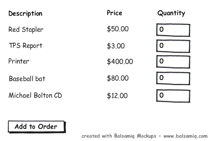

The project is a simple ordering system that allows someone to order a specified quantity of items from a list.
The purpose of this exercise is to evaluate a general knowlege of Asp.Net MVC skills and good coding practices.
Scenario
You are tasked with adding some new functionality to an existing legacy application.
This application was poorly coded and has a lot of issues with maintainability.
Feel free to refactor the code however you see fit as you add the new functionality.
User story: As someone who orders multiple products at the same time, I would like to be able to type in the quantity for each item then press the "Add to Order" button once and have the contents of my cart be refreshed without doing a full page reload (read: ajax)

Come prepared to have a friendly and fun conversation with other developers about what you did to the product and why you chose to do it that way.
Technical notes
- The OrderRepository is meant to be an abstraction over the Database layer. There is no reason to setup a database and actually save data, we don't expect you to do that in this exercise.
- There is no need to add functionality to make this project complete other than the user story you are tasked with. Such as deleting items you add to your order.
- If you have any tools that will help you such as JQuery, StructureMap, Resharper, etc. Feel free to use those as well.